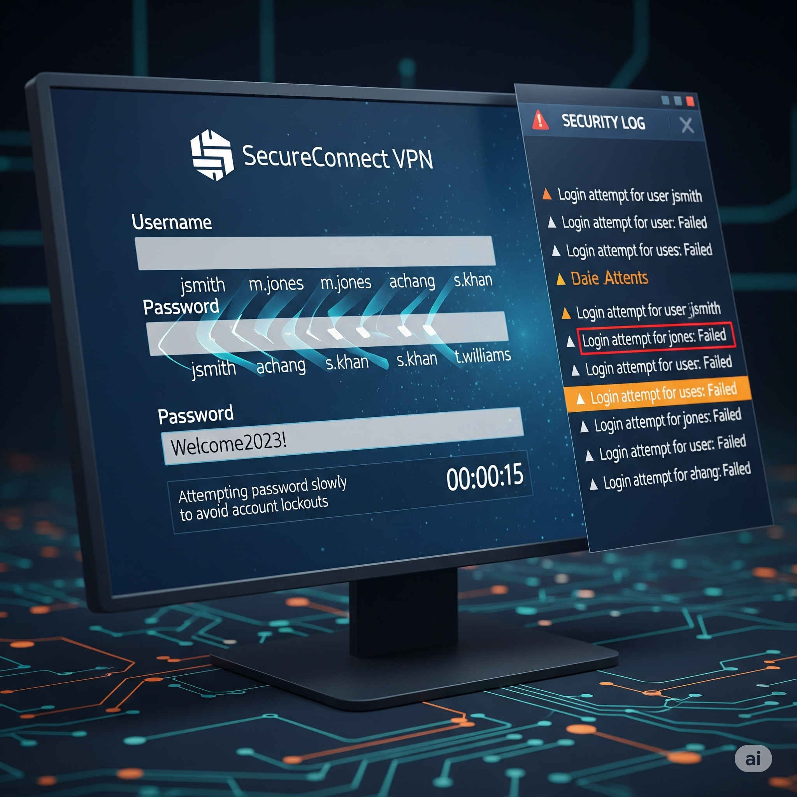
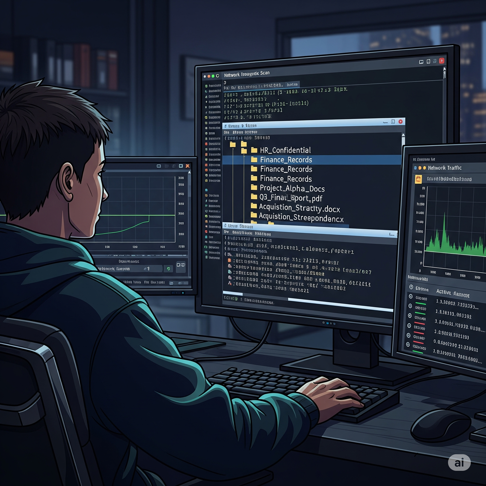

Hoş geldiniz, bu yeni sızma testi projesinde hedefiniz bir şirketin VPN ağı. Dışarıdan VPN erişimiyle içeri sızacak ve içeriden bilgi toplayarak yetki yükseltme fırsatları arayacaksınız. Göreviniz, şirket ağına sızma potansiyelini değerlendirmek ve zafiyetleri etik sınırlar içinde kanıtlamak. Kararlarınız, hem projenin başarısını hem de şirket ağının güvenliğini doğrudan etkileyecek!
Simülasyon Rolünüz
Sizin Rolünüz: Sızma Testi Uzmanı Verilen ağda zafiyet bulmak ve bunları etik sınırlar içinde kanıtlamakla sorumlusunuz.
Hedef: Kurumsal VPN ve İç Ağ Şirketin VPN portalına erişim ve iç ağdaki kaynakları keşfetme.
Temel Metrikler
Veri Bütünlüğü Veri sızıntısı veya hasar riski. (Başlangıç: %100)
Ağ Performansı Uygulamanın çalışmasına verilen zarar. (Başlangıç: %100)
İtibar Puanı Güvenlik ekibinin profesyonelliği ve etik duruşu. (Başlangıç: 100)
Finansal Etki Onarım ve ceza maliyetleri. (Başlangıç: ₺0)
Veri Bütünlüğü
100%
Ağ Performansı
100%
İtibar Puanı
100
Finansal Etki
₺0
Kalan Süre
10:00
Faz 1: OSINT & Adlandırma Şeması
Hedef: VPN Kullanıcı Adlarını Çıkarmak
Sızma testinizin ilk aşamasında, şirket hakkında açık kaynaklardan (OSINT) bilgi topluyorsunuz. Amacınız, VPN portalında kullanılabilecek geçerli kullanıcı adlarını tahmin etmek için e-posta ve adlandırma şemalarını bulmaktır.
Kullanıcı adlarını çıkarmak için hangi OSINT tekniğini uygulayacaksınız?
Faz 2: Password Spray Planı (Lockout-Safe)
Hedef: VPN Erişimi Kazanmak
Bir önceki aşamada elde ettiğiniz kullanıcı adlarını kullanarak VPN portalına erişim sağlamaya çalışacaksınız. Şirketin hesap kilitlenme politikalarını ihlal etmeden ve gürültü yapmadan, yaygın bir parola listesiyle deneme yapmanız gerekiyor.

Hesap kilitlenmesini tetiklemeden hangi parola saldırı planını uygulayacaksınız?
Faz 3: MFA / Portal Çevresi
Hedef: VPN'e Erişim
Password Spray saldırınız başarılı oldu ve bir kullanıcı hesabının kimlik bilgilerini ele geçirdiniz. Ancak, VPN portalına erişmeye çalıştığınızda MFA (Multi-Factor Authentication) engeliyle karşılaştınız. Bu aşamada amacınız, zayıf bir MFA yapılandırması veya eski bir erişim protokolü bularak bu engeli aşmak.
MFA engeliyle karşılaştığınızda hangi yöntemi deneyeceksiniz?
Faz 4: Düşük Gürültülü İç Keşif
Hedef: İç Ağ Kaynaklarını Keşfetmek
VPN üzerinden iç ağa erişim sağladınız. Artık amacınız, mümkün olduğunca az gürültü çıkararak içerideki kaynaklar, sunucular ve potansiyel bilgi sızıntısı kaynakları hakkında bilgi toplamaktır. Bu, sonraki aşamada yetki yükseltme için zemin hazırlayacaktır.
İç ağda gürültü yapmadan hangi keşif yöntemlerini kullanacaksınız?
Faz 5: Kimlik Bilgisi Avı (Config/Script)
Hedef: Yetki Yükseltme için Kimlik Bilgisi Bulmak
İç ağ keşfiniz sırasında, bir dosya paylaşımında potansiyel olarak hassas bilgiler içeren bir `deploy.ps1` veya `db.yml` dosyası buldunuz. Amacınız, bu dosyalarda gömülü olan kullanıcı adı, şifre veya bağlantı dizesi (connection string) gibi kritik kimlik bilgilerini bulmak ve yetkinizi artırmak için kullanmaktır.

Hassas dosyalardan kimlik bilgilerini nasıl çıkaracaksınız?
Faz 6: Hizmet Hesabı ile Etki Kanıtı
Hedef: Etki Kanıtı Oluşturmak
Önceki aşamada, bir hizmet hesabının kimlik bilgilerini ele geçirdiniz. Bu hesap, ağda kritik bir yetkiye sahip. Amacınız, bu yetkiyi kullanarak, sisteme kalıcı zarar vermeden bir etki kanıtı (Proof of Concept) oluşturmaktır.
Yetki yükseltmenizin kanıtını nasıl oluşturacaksınız?
Faz 7: Rapor & Sertleştirme
Hedef: Kapsamlı Raporlama ve İyileştirme
Sızma testini başarıyla tamamladınız ve VPN'den başlayarak iç ağa kadar olan tüm zafiyet zincirini kanıtladınız. Şimdi, bulgularınızı, yöneticilere ve teknik ekibe sunmak için bir rapor hazırlamanız ve kalıcı iyileştirme önerilerinde bulunmanız gerekiyor.
Projenizi tamamlamak için nasıl bir raporlama ve sertleştirme stratejisi izleyeceksiniz?